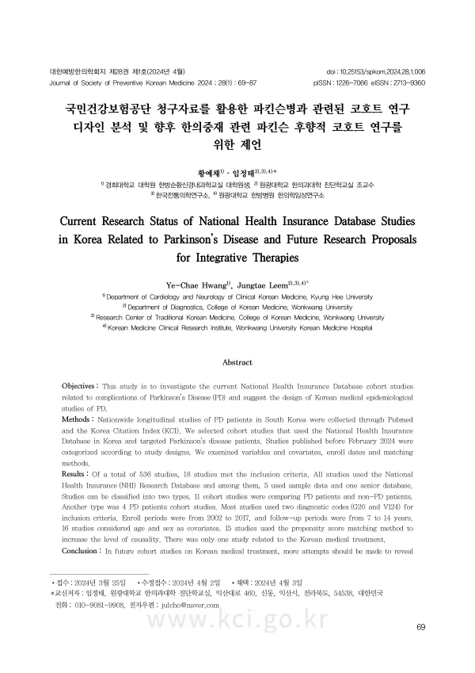

Current Research Status of National Health Insurance Database Studies in Korea Related to Parkinson's Disease and Future Research Proposals for Integrative Therapies
Hwang YC, Leem J
Journal of Society of Preventive Korean Medicine 28(1):69-87

첫 장 · 오픈액세스First page · open access
논문 소개Summary
건강보험 청구자료로 연구를 하려면 먼저 남들이 어떻게 했는지 알아야 합니다. 진단코드를 무엇으로 잡을지, 언제부터 등록할지, 어떤 변수를 보정할지에 따라 결과가 달라지기 때문입니다. 이 연구는 파킨슨병을 다룬 국내 건강보험 코호트 연구들이 어떤 설계를 써 왔는지 정리하고, 앞으로 한의 중재를 넣은 연구를 할 때 무엇을 참고해야 하는지 제안한 것입니다.
펍메드와 한국학술지인용색인에서 국내 파킨슨병 환자를 대상으로 한 전국 규모 종단 연구를 모았습니다. 2024년 2월까지 발표된 것 가운데 국민건강보험 자료를 쓴 코호트 연구를 골랐고, 설계에 따라 분류하면서 변수와 보정변수, 등록 시점, 매칭 방법을 살폈습니다.
536편 가운데 18편이 기준에 맞았습니다. 모두 국민건강보험 연구 데이터베이스를 썼고 그중 5편은 표본자료를, 1편은 노인 데이터베이스를 썼습니다. 설계는 둘로 나뉘었습니다. 11편은 파킨슨병 환자와 파킨슨병이 없는 사람을 견주는 코호트였고, 4편은 파킨슨병 환자만 보는 코호트였습니다. 대부분 진단코드 두 가지(G20과 산정특례 V124)를 함께 써서 대상을 정했습니다. 등록 기간은 2002년부터 2017년까지였고 추적 기간은 7년에서 14년이었습니다.
이 정리가 알려 주는 것은 설계의 관행입니다. 파킨슨병처럼 진단이 애매할 수 있는 병에서는 상병코드 하나만으로 환자를 정의하면 실제 환자가 아닌 사람이 섞입니다. 산정특례 코드를 함께 요구하는 것이 그래서 관행이 되었습니다. 추적 기간이 7년을 넘는 것도 진행성 질환에서 결과가 드러나려면 그만큼 필요하기 때문입니다.
한계는 국내 연구만 훑었다는 점과 18편이 많지 않다는 점입니다. 그럼에도 이 작업은 다음 연구의 설계도를 미리 그려 두는 일이었습니다. 이 연구실이 이후 파킨슨병 침 치료 코호트 연구를 수행할 때 쓴 정의와 추적 기간이 여기서 정리한 관행을 따른 것입니다.
Working with health insurance claims data requires first knowing how others have done it. Results shift depending on which diagnostic codes define a case, when enrolment begins and which covariates are adjusted for. This study catalogued the designs used in Korean national health insurance cohort studies of Parkinson's disease and set out what future studies incorporating Korean medicine interventions should follow.
Nationwide longitudinal studies of Korean patients with Parkinson's disease were gathered from PubMed and the Korea Citation Index. Cohort studies using the National Health Insurance Database and published before February 2024 were selected, classified by design, and examined for variables, covariates, enrolment dates and matching methods.
Of 536 records, 18 met the criteria. All used the National Health Insurance Research Database; five used sample data and one the senior database. Designs fell into two types: 11 cohort studies compared patients with Parkinson's disease against those without, and four followed only patients with the disease. Most defined cases using two diagnostic codes together (G20 and the rare-disease registration code V124). Enrolment periods ran from 2002 to 2017 and follow-up from 7 to 14 years.
What this catalogue reveals is the working convention. In a condition where diagnosis can be ambiguous, defining patients by a single diagnostic code admits people who are not actually cases — which is why requiring the registration code alongside became standard practice. Follow-up beyond seven years likewise reflects how long a progressive disease takes to show differences in outcome.
Limitations are that only Korean studies were surveyed and that 18 is not a large sample. Even so, the work drafts the blueprint for subsequent research. The case definitions and follow-up periods the lab later used in its Parkinson's disease acupuncture cohort study follow the conventions identified here.
인용Cite
Hwang YC, Leem J. Current Research Status of National Health Insurance Database Studies in Korea Related to Parkinson's Disease and Future Research Proposals for Integrative Therapies. Journal of Society of Preventive Korean Medicine. 2024;28(1):69-87. doi:10.25153/spkom.2024.28.1.006